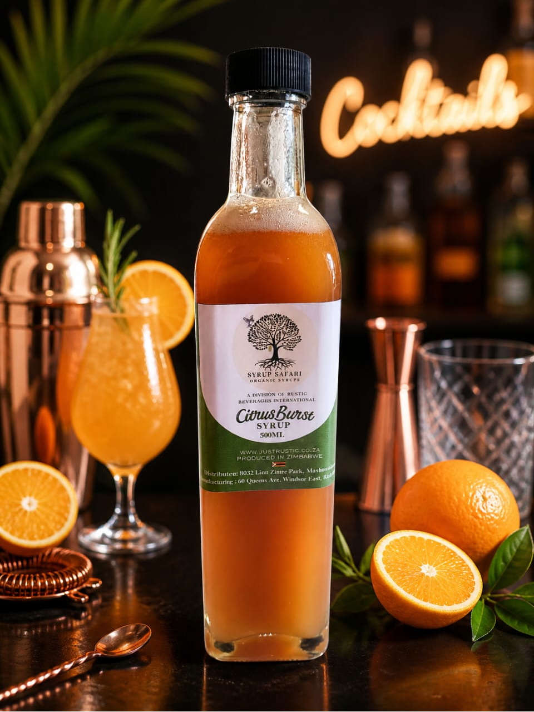
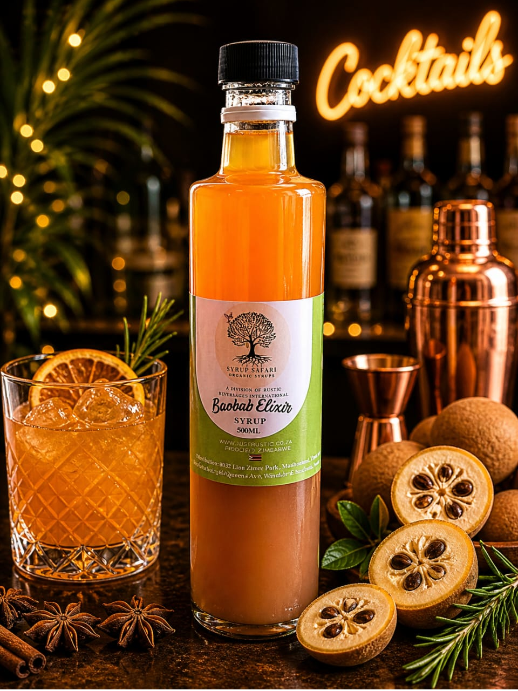
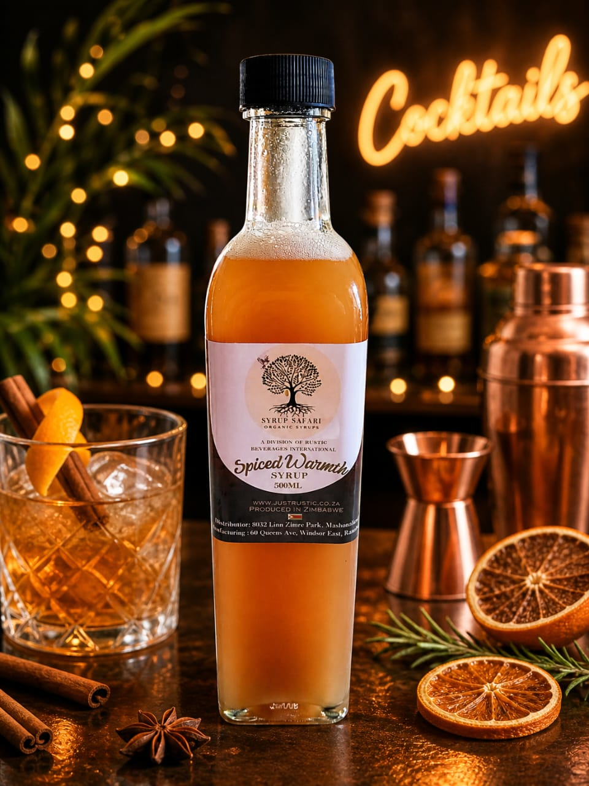
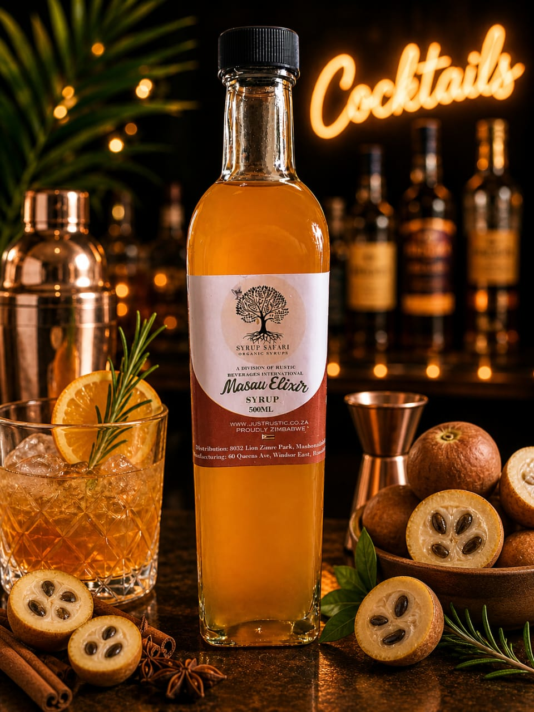

Syrup Safari is more than a range of syrups—it's a journey into the soul of African flavour. Founded in 2023 by The Rustic Barman, the brand was born from a bold vision: to bring Africa's rich tapestry of ingredients—its botanicals, roots, herbs, and indigenous fruits—into the world of modern mixology.
Each bottle is carefully handcrafted, capturing authentic, vibrant tastes that transform ordinary drinks into memorable experiences. Refined through passion, creativity, and real-world feedback, Syrup Safari's five signature flavours have already been enjoyed and approved by over 1,500 people in just two years—a testament to both quality and originality.
Whether you're crafting cocktails, elevating mocktails, or simply experimenting at home, Syrup Safari invites you to explore, create, and taste Africa in every drop. Now available online, your next signature serve starts here.

Discover a vibrant yet comforting flavour journey with our Baobab Citrus Burst syrup.
Crafted from the natural tang of baobab and lifted with fresh grapefruit and lemon, it delivers a bright, zesty profile that awakens the palate while maintaining a smooth, rounded finish. With every sip, expect a refreshing balance of tart citrus, subtle sweetness, and a gentle, earthy depth from the baobab — creating a layered taste that lingers pleasantly.
Perfect for elevating cocktails, adding sparkle to spritzes, or bringing a sophisticated twist to mocktails, this syrup turns every drink into a refreshing, sun-kissed experience.

Discover a syrup that captures both vibrancy and comfort in every drop.
This bright baobab blend delivers a gentle tang balanced with natural, rounded sweetness, creating a refreshing yet soothing flavour profile. When you sip it, expect a lively burst of tart fruit upfront, followed by a smooth, mellow finish that lingers pleasantly on the palate. It lifts cocktails, adds depth to mocktails, and brings a crisp, elegant twist to spritzes—turning every drink into a refined, feel-good experience

Discover a syrup that wraps your senses in warmth and depth. Our Baobab Spiced Warmth syrup blends the naturally tangy richness of baobab with the gentle heat of ginger and the comforting spice of cinnamon.
With every sip, expect a smooth balance of bright, citrusy notes layered with a lingering, cozy finish that feels both refreshing and soothing. It adds complexity and character to any serve—whether you're crafting cocktails, elevating mocktails, or adding a spiced twist to a spritz. This is more than a flavor—it's a sensory experience that brings warmth, vibrancy, and a touch of African-inspired sophistication to your glass

Experience the comforting embrace of a vibrant, sweet-tart syrup made from sun-ripened Masau. Bright and refreshing with subtle citrus notes, a hint of tropical fruit, and a smooth, lingering finish—perfectly suited for cocktails, mocktails, and uplifting spritzes.